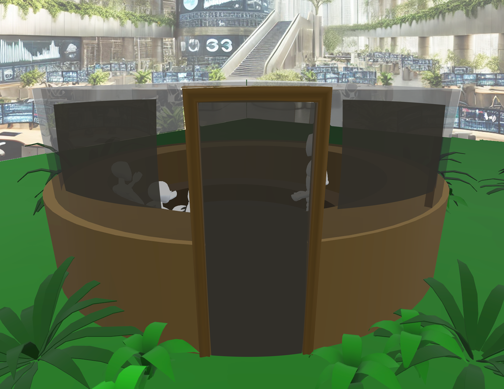
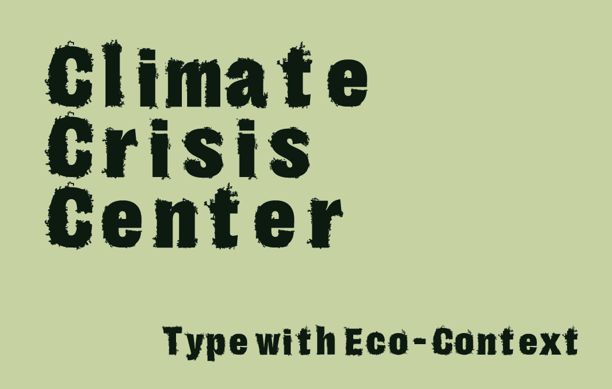
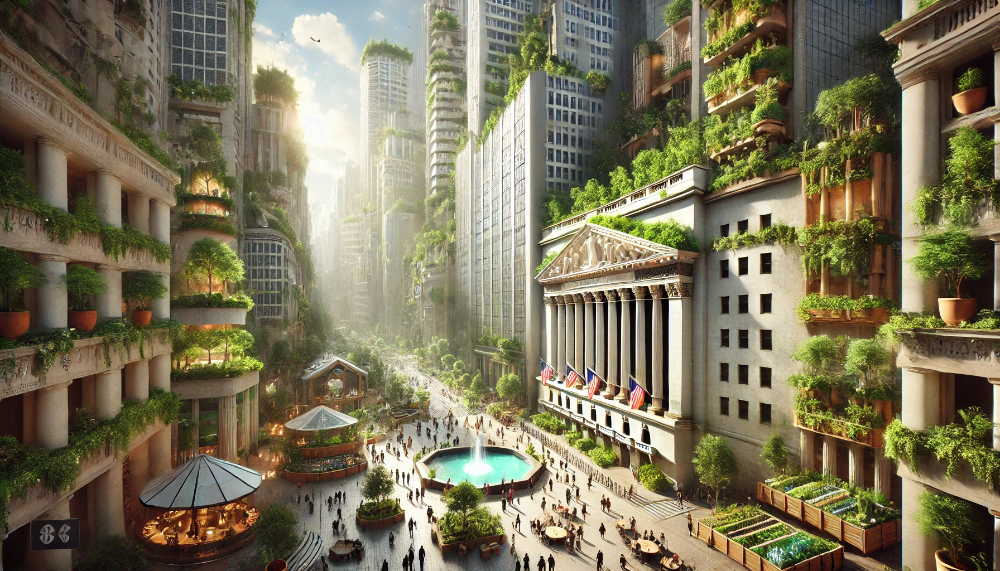
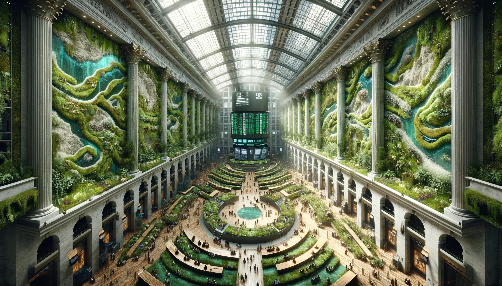
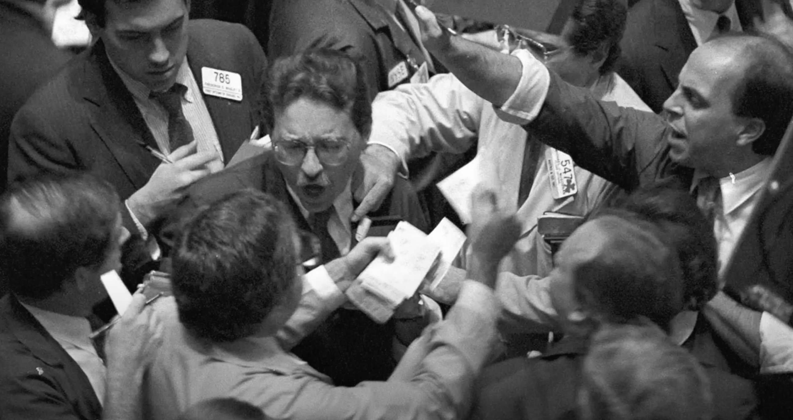
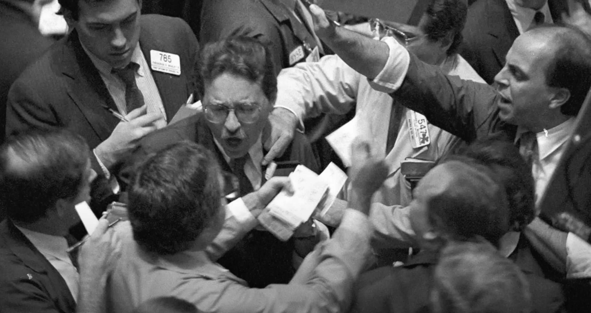

Markets are reflections of our priorities. Short-term gains, driven by quarterly pressures, often push sustainable solutions to the margins.
This speculative design imagines a shift—where market sentiment aligns with environmental stewardship. Where volatility is replaced by long-term accountability. Where the trading floor becomes a space for shared responsibility.
Design Interventions
Circular Desk System


Architecturally restructured into a circular form and inspired by 1920's conversation pits, the desks encourage dialogue over competition. Decision-making becomes collaborative, not individualistic. The space invites slowness and presence—prioritizing ecological foresight over financial speed.
Shared Interface
This speculative centralized screen would use AI to simulate the ecological impact of trades before they’re made. Transparency isn’t just visual but also ethical. Brokers are asked to weigh not just profit,
but planetary cost. This is finance designed for mutual flourishing.
Contextual Type

While designing the interface I came up with the idea of a naturally inspired font. Created by scanning moss in my garden, this moss typeface reinterprets a classic grotesque form. It gives natural textures to financial symbols to blur the line between economy and ecology. The speculative screens here
would utlize this font to help continue the eco-imagined future to life in every statistic, stock, and conversation.
Speculative Futures


I used AI and speculative design to map three pivotal futures:
- 2029: Brokers adopt a collectivist model, evaluating trades based on community and climate impact.
- 2038: Companies with negative environmental footprints are delisted, replaced by regenerative initiatives.
- 2040: NYSE brokers become stewards of sustainability—each trade a vote for planetary balance.
These aren’t predictions. They’re provocations—inviting us to imagine, design, and demand better.
Made with 🌍 & ❤️ by Lilly White, MDes Candidate at University of Arkansas. Visit my personal website here.
 
